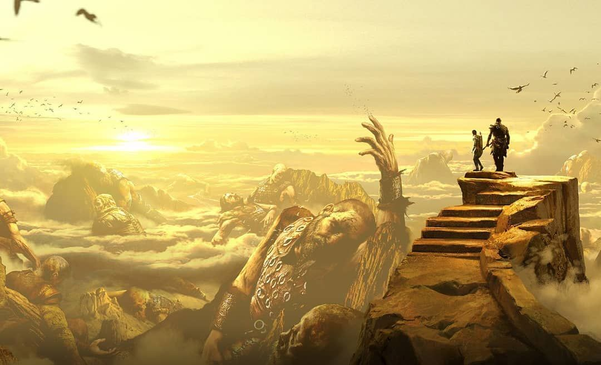

Jötunheim
 Jötunheim é referenciado várias vezes nas partes iniciais e intermediárias do jogo. Primeiro, quando Freya está instruindo Kratos a usar a Bifröst e Atreus percebe que um portal está faltando. Freya explica que o portal perdido leva a Jötunheim, Terra dos Gigantes. Ela diz que, há mais de um século, todos os portais de Jötunheim nos outros oito reinos desapareceram de repente. Mais tarde, no jogo, foi revelado que os Gigantes destruíram a maioria dos portais para impedir que Odin e Thor obtessem seus segredos e completassem o genocídio dos Gigantes.
Mímir e Týr eram os únicos não-gigantes conhecidos que sabiam a localização do último portal e como abri-lo. Mímir também diz que Jötunheim tem o pico mais alto em todos os Nove Reinos. Ele mostra que ele consegue abrir o portão e que Baldur provavelmente não seria capaz de perseguir Kratos lá, mas, primeiro, Kratos teria que recuperar seu outro olho, que estava no estômago da Serpente do Mundo.
Depois de finalmente chegar a Jötunheim, Kratos e Atreus começam a escalar a montanha, na qual eles aprendem sobre a verdadeira herança de Faye em uma caverna. Eles também descobrem uma parede de arte feita por Faye. A parede descreve todos os principais eventos que ocorreram ao longo da jornada de Kratos e Atreus. Entre essas representações, estão eventos que ainda estão por ocorrer. Kratos percebe que uma das pinturas inacabadas revela um evento futuro onde Atreus está ajoelhado e embalando o corpo morto de Kratos.
Kratos também percebe que Baldur não estava atrás dele, mas atrás de Faye, sem saber que ela já havia morrido e virado cinzas.
No cume, os dois espalham as cinzas de Faye e veem vários cadáveres de gigantes espalhados pela cordilheira. Então, Atreus fala com seu pai e afirma que a obra de arte que eles viram antes de chegar ao cume se referia a ele como "Loki". Foi então que Kratos revelou que "Loki" era o nome que sua esposa queria dar ao filho.